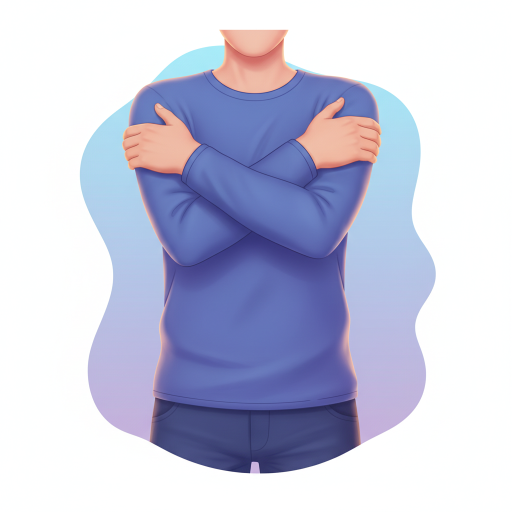
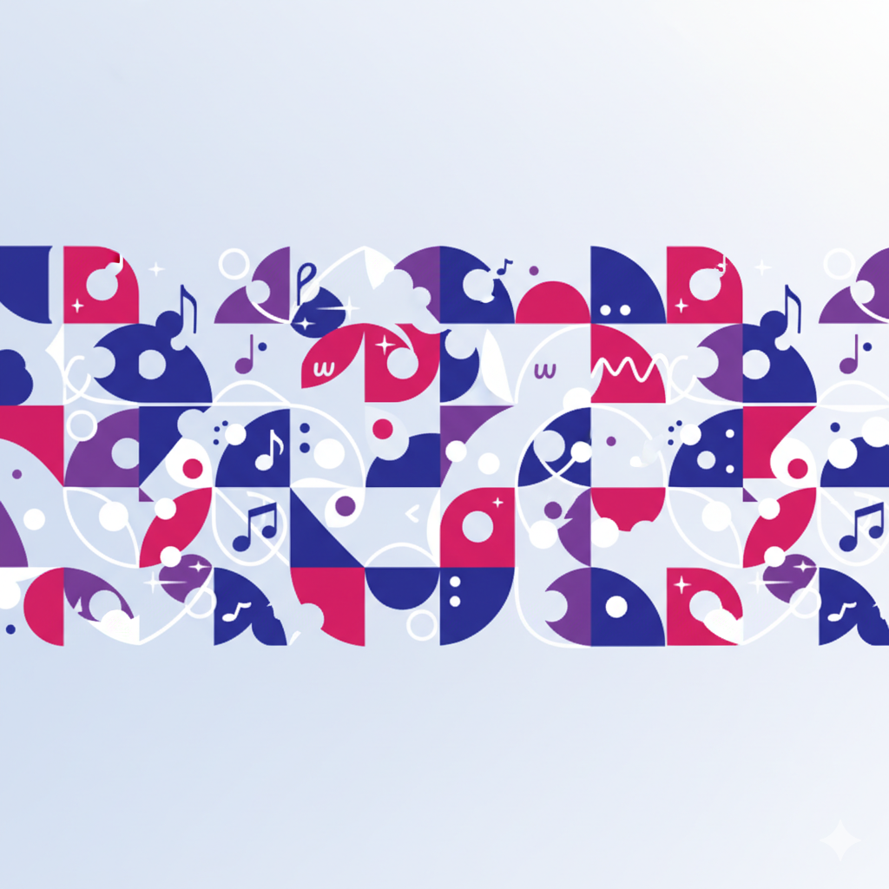
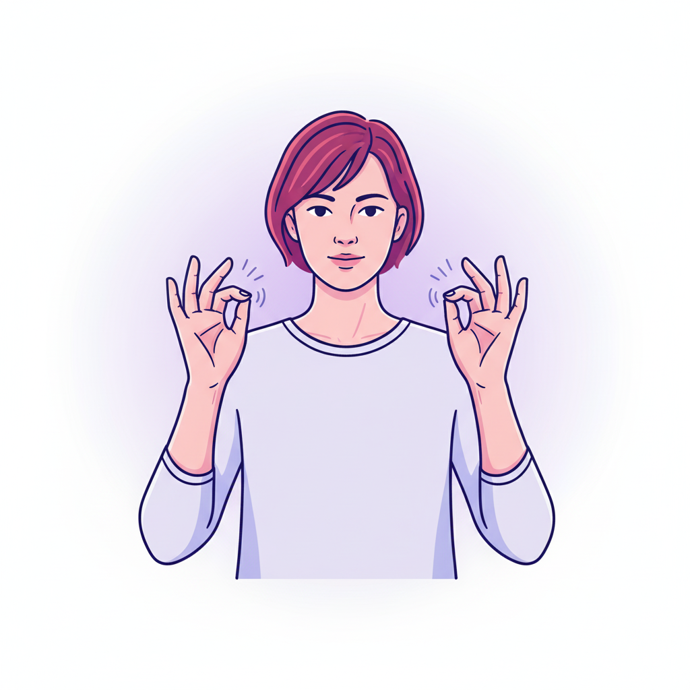
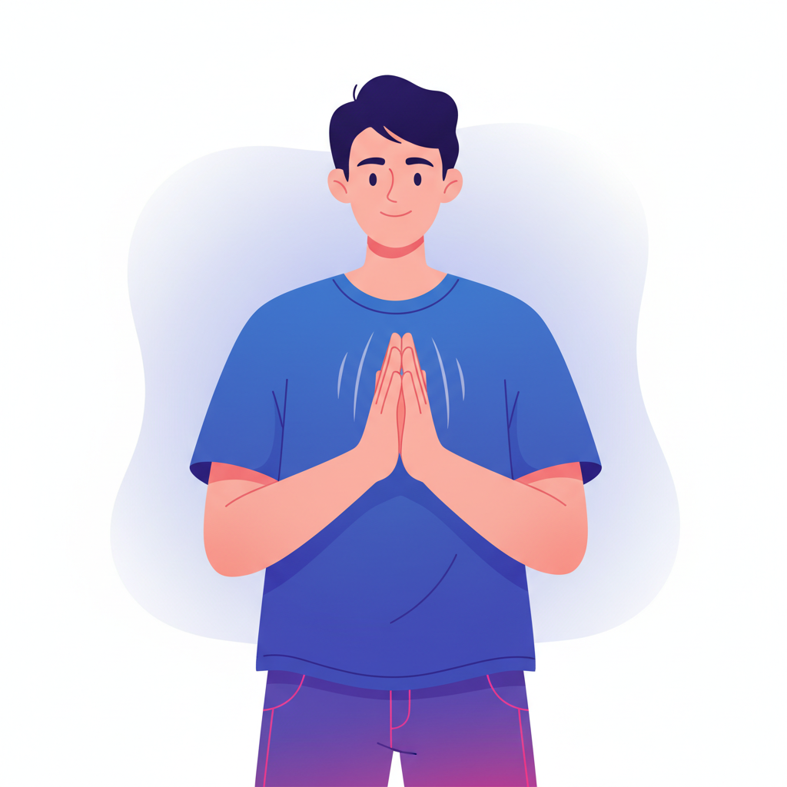
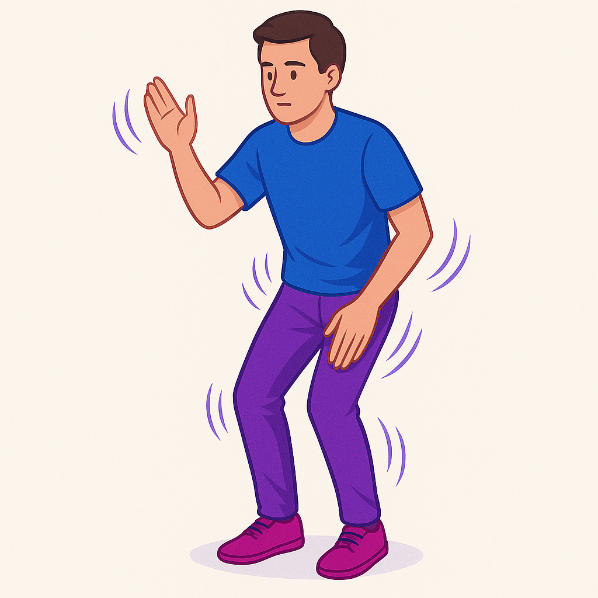

Redonda · 4 tiempos
Gesto: autoabrazo sostenido todo el compás.
Gesto: autoabrazo sostenido todo el compás.
Programa didáctico
Primero lo sentimos en el cuerpo, luego lo llevamos al instrumento. Todo lo que entra por el cuerpo se asimila mejor: el pulso, la subdivisión y la coordinación se vuelven naturales; después lo transferimos a notas individuales o incluso acordes.

Practica primero con percusión corporal. Cada figura tiene su gesto:




Luego, los mismos patrones pueden tocarse en tu instrumento con notas individuales o incluso acordes.
Referencia visual de los símbolos y su duración en 4/4.